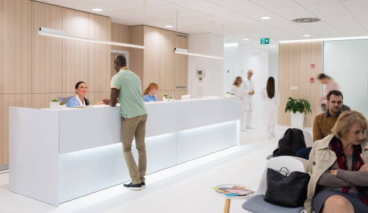

About Us

Russel Street Medical opened in 2020 and is located in Melbourne’s CBD
at 427 Swanston Street Melbourne 3000, just opposite RMIT University
Building 10 and within walking distance of Melbourne central station.
We strive to help all our patients with a focus on preventative health
care, a view to managing chronic health conditions with a holistic
approach, and with access to a wide range of specialist care providers
when needed.
Our Opening Times are:
Monday 9:00 AM - 6:00 PM
Tuesday 9:00 AM - 6:00 PM
Wednesday 9:00 AM - 6:00 PM
Thursday 9:00 AM - 6:00 PM
Friday 9:00 AM - 6:00 PM
Saturday 9:00 AM - 6:00 PM
Sunday 9:00 AM - 6:00 PM
RMIT students and staff receive discounts through partnership programs.
| Consultation | Normal Fee | RMIT Member Fee | Medicare Rebate |
|---|---|---|---|
| Standard | $80.00 | $60.00 | $40.00 |
| Long or Complex | $125.00 | $95.00 | $75.00 |
Staff Profiles
Dr. Stephen Hill

Stephen Hill graduated from Auckland University in New Zealand in 2014
and obtained his Fellowship from the Royal Australian College of General
Practitioners in 2017.
Over his training and practice, Stephen worked in internal medicine at
the Royal Children's Hospital Melbourne before transitioning to General
Practice.
Ms. Kiyoko Tsu
Kiyoko Tsu completed her Bachelor of Nursing at the Yong Loo Lin School
of Medicine in Singapore in 2019.
She is an accredited Nurse Immunizer and has worked in various hospitals
within metropolitan Melbourne.
Service Area
Welcome to our clinic! Whether you're a new patient or a returning one, we're here to provide you with top-notch healthcare services. If you're a new patient, we invite you to register with us in person. Our friendly staff will be happy to assist you with the registration process and answer any questions you may have. For our current patients, we want to make things convenient for you. You can use our online booking system to schedule appointments for vaccinations and blood tests. This way, you can manage your healthcare needs with ease. At our clinic, your well-being is our top priority. We're dedicated to delivering the best care possible to you and your family. Feel free to reach out to us if you have any inquiries or if you'd like to schedule an appointment.